资料归集
统一上传多格式资料，自动解析压缩包目录，并支持关键材料绑定。
01 / ENGINEERING INTELLIGENCE
面向建筑工程多源异构文件处理场景，融合 OCR 识别、大模型语义分析与规则化字段解析，实现图纸及相关工程文件的自动分类、字段识别、结果校验与结构化输出。

工程资料归集与标准化归档界面
THE PROBLEM
工程资料格式多样、目录混乱，异常文件不易发现。人工归档不仅效率有限，也难以保证资料分类、字段来源和交付结果的一致性。
系统将文件接入、分类归档、字段提取、结果校验和导出串联为可操作的处理流程。
CAPABILITIES
统一上传多格式资料，自动解析压缩包目录，并支持关键材料绑定。
按标准目录自动归档，检测异常文件，分类结果可由人工调整。
自动提取关键信息，支持原文依据溯源、诊断提示与结果修正。
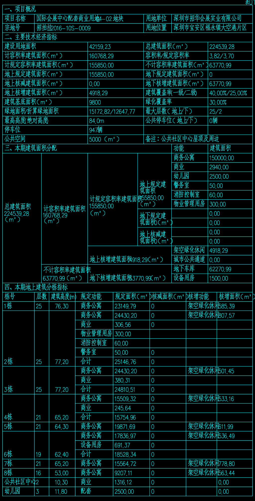

FULL PROJECT VISUALS
以下保留了原 PPT 中该项目全部具有内容价值的系统界面、图纸输入、识别结果与核验截图。
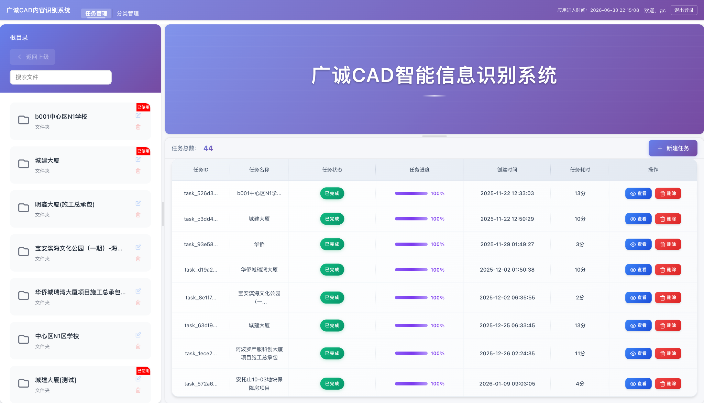
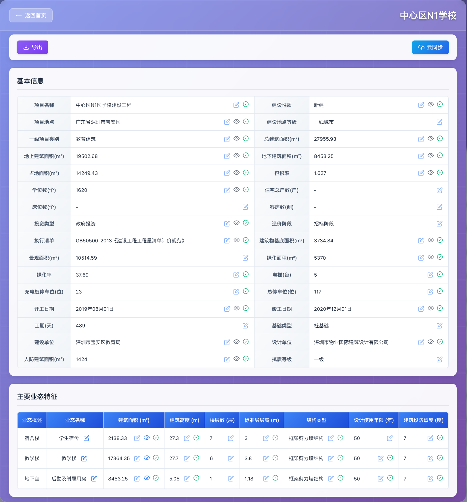
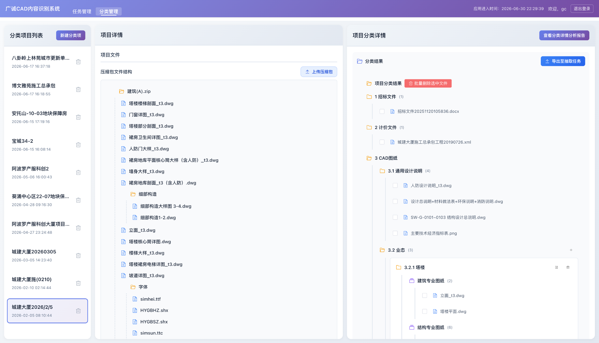
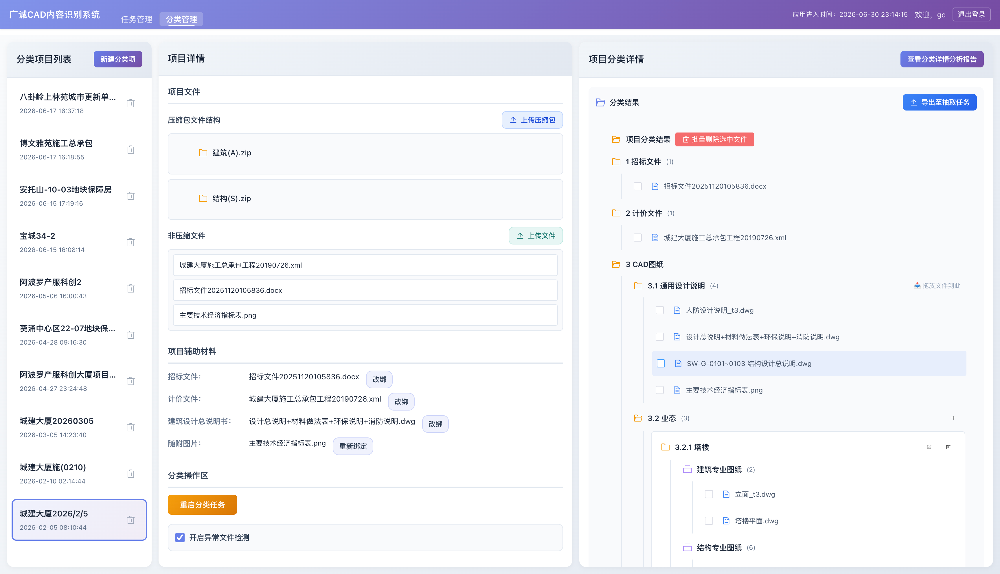
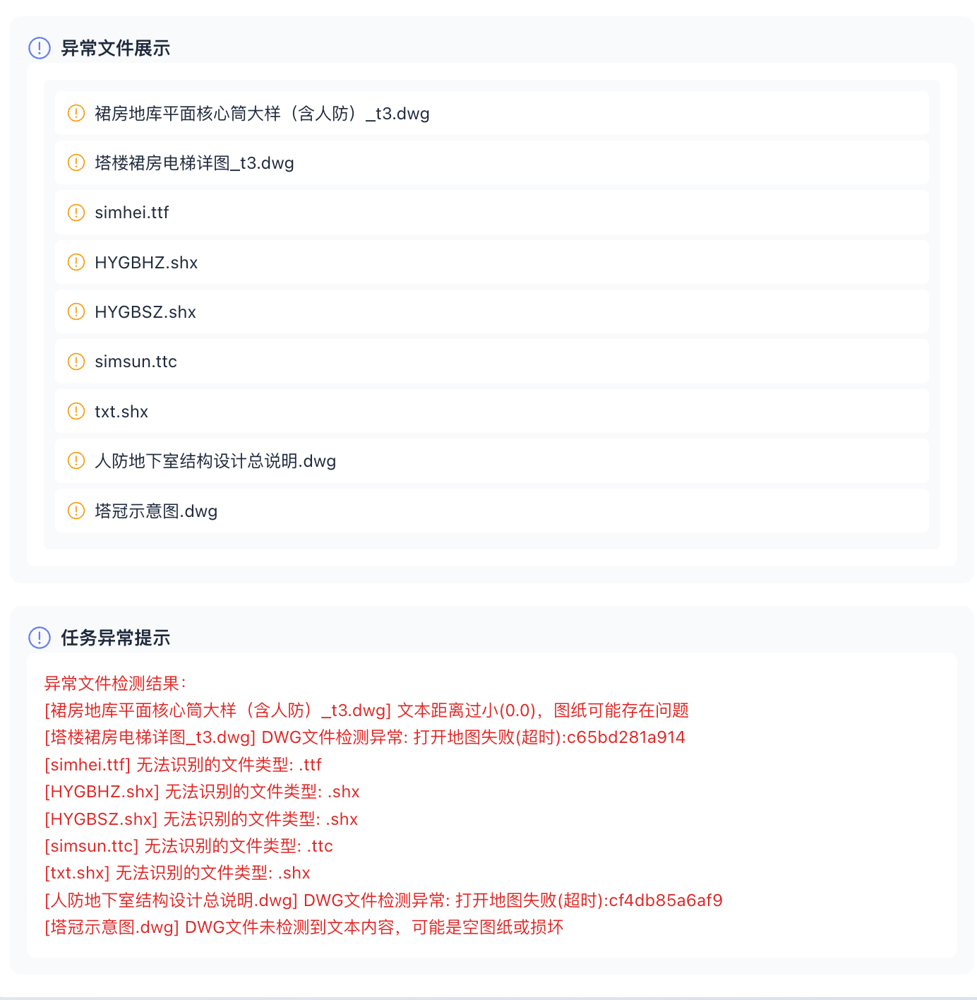
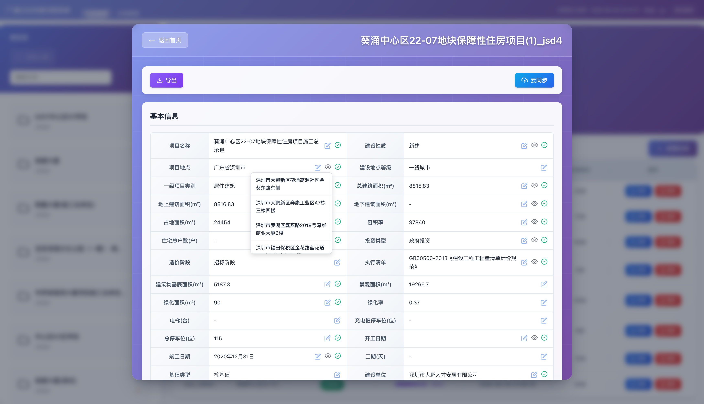
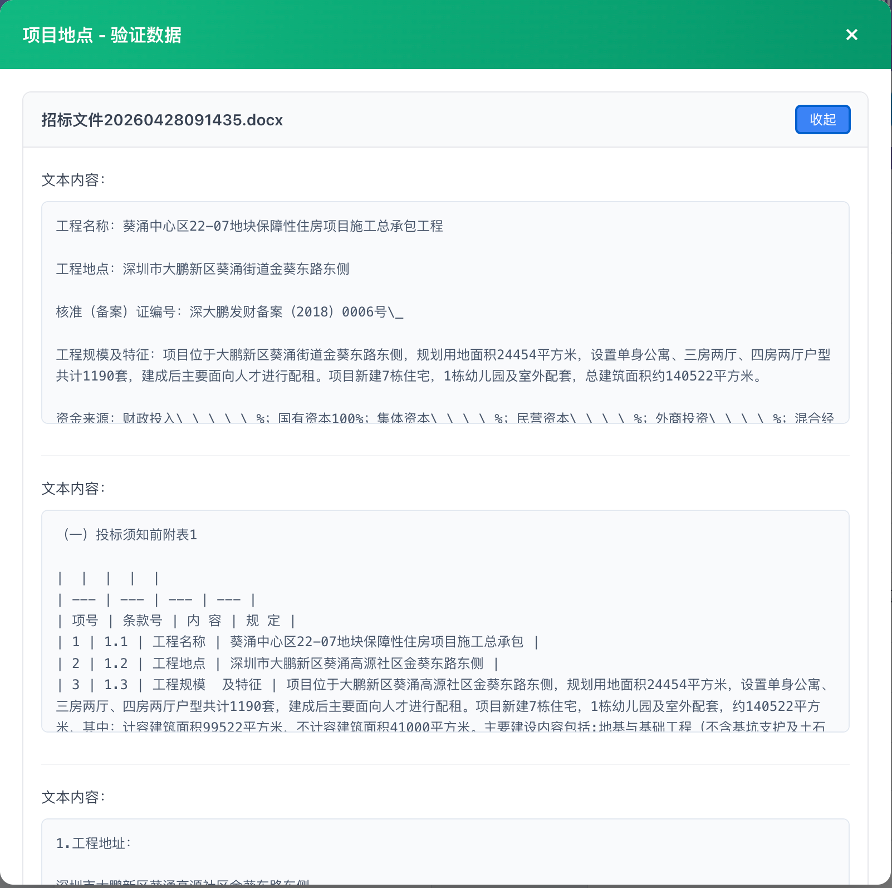
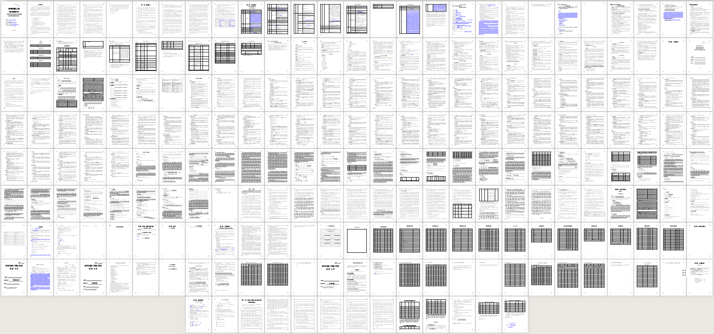
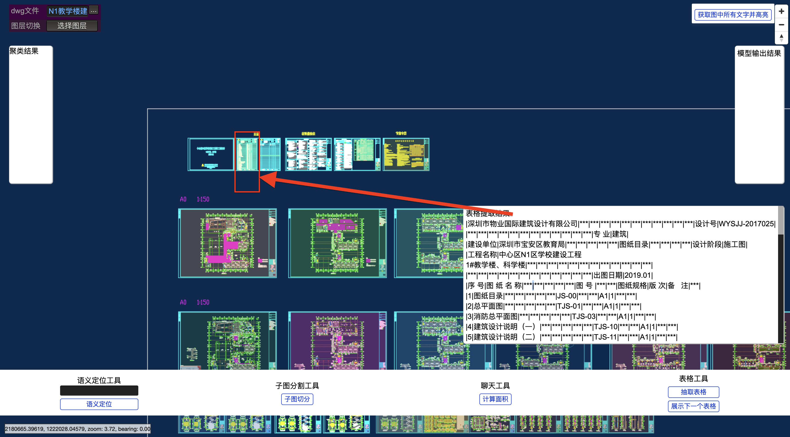

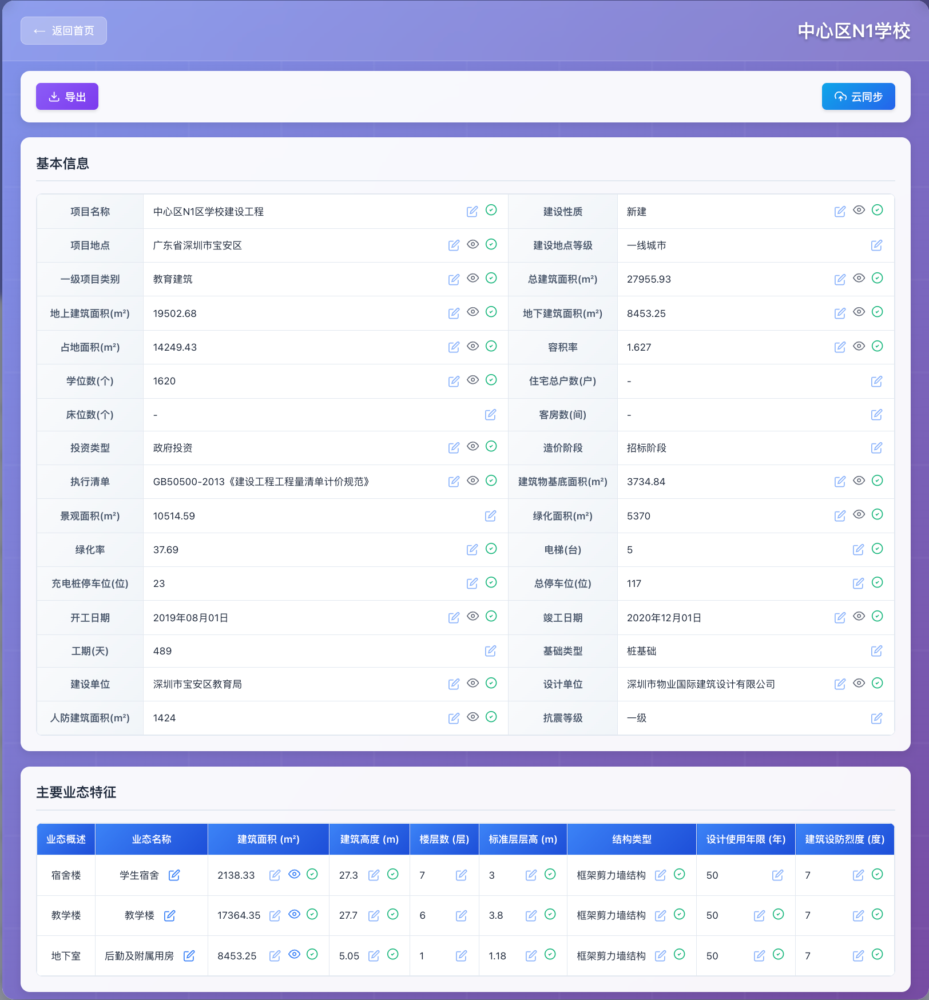
RESULT
提取字段准确率
通过多模型协同识别与规则化字段解析，系统将 CAD 图纸及工程资料转化为可复核、可追溯的结构化信息。